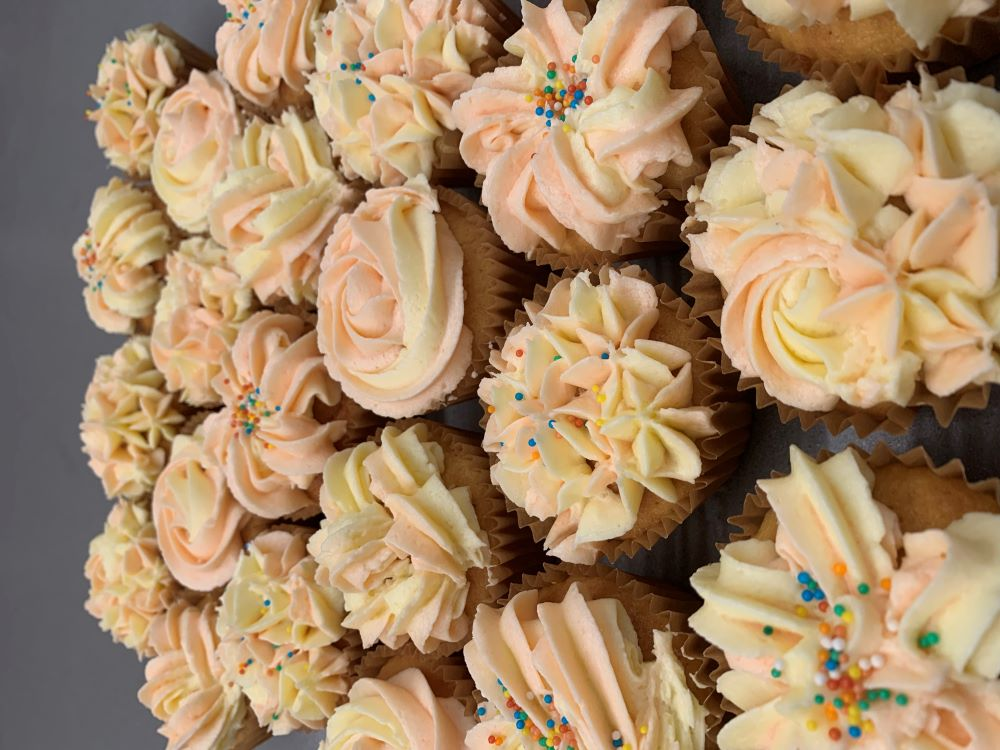
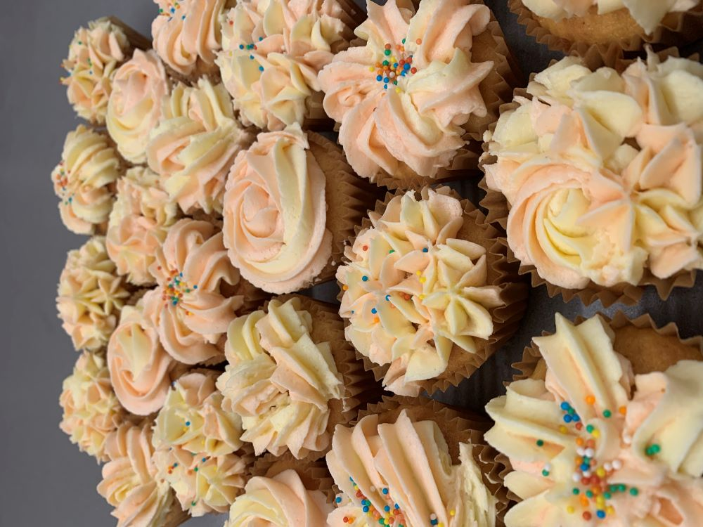

Instructions
Preparation
Preheat the oven to 180°c and put cupcake liners into muffin pans. Soften the butter and bring the eggs to room temperature.

To make the cupcakes
Cream the butter until smooth, add the sugar gradually and beat until the mixture is light and fluffy.
Add the eggs one at a time, beating for at least a minute after each addition.
Sift the flour and baking powder together and add to the mixture alternately with the milk and vanilla.
Spoon into the cupcake liners and bake for about 20 minutes or until golden. Finish by cooling on a rack.
To make the frosting
Combine half of the sifted icing sugar with the softened butter, milk, and vanilla and beat until smooth.
Add the remaining icing sugar gradually, mixing until the icing is a good spreading consistency.
Add the desired amount of food coloring and frost the cupcakes as you wish.
Gallery

 
